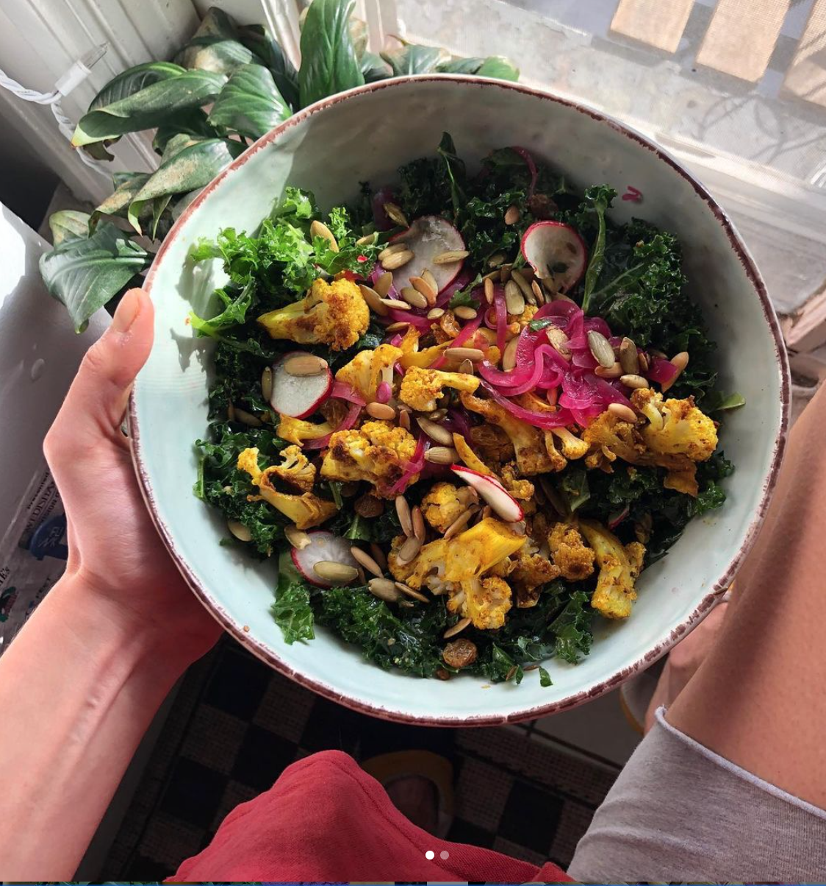
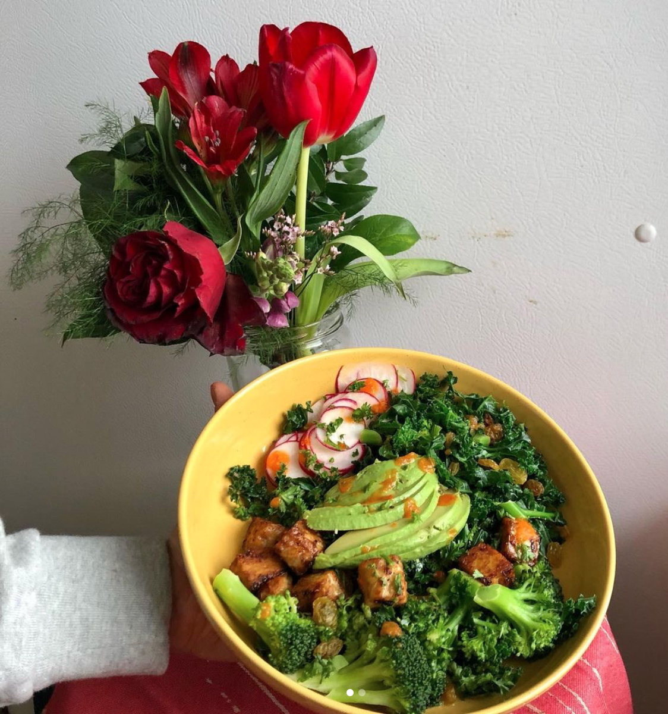
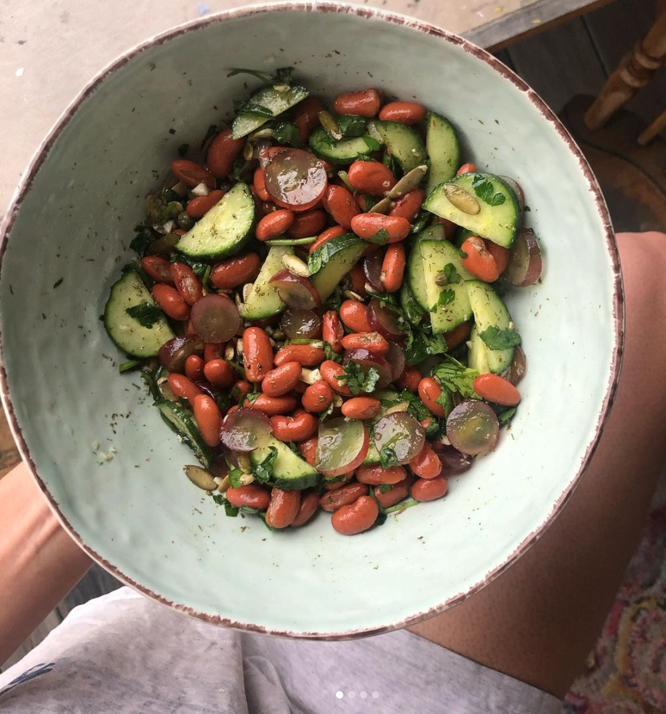

"Veganism is a philosophy and way of living which seeks to exclude - as far as is possible and practicable - all forms of exploitation of, and cruelty to, animals for food, clothing or any other purpose; and by extension, promotes the development and use of animal-free alternatives for the benefit of animals, humans and the environment. In dietary terms it denotes the practice of dispensing with all products derived wholly or partly from animals."
Go vegan for the animals:
Preventing the exploitation of animals is not the only reason for becoming vegan, but for many it remains the key factor in their decision to go vegan and stay vegan. Having emotional attachments with animals may form part of that reason, while many believe that all sentient creatures have a right to life and freedom. Specifics aside, avoiding animal products is one of the most obvious ways you can take a stand against animal cruelty and animal exploitation everywhere.
Go vegan for your health:
Well-planned vegan diets follow healthy eating guidelines, and contain all the nutrients that our bodies need. Both the British Dietetic Association and the American Academy of Nutrition and Dietetics recognise that they are suitable for every age and stage of life. Some research has linked vegan diets with lower blood pressure and cholesterol, and lower rates of heart disease, type 2 diabetes and some types of cancer.
Going vegan is a great opportunity to learn more about nutrition and cooking, and improve your diet. Getting your nutrients from plant foods allows more room in your diet for health-promoting options like whole grains, fruit, nuts, seeds and vegetables, which are packed full of beneficial fibre, vitamins and minerals.
RECIPE: QUICK COUSCOUS SALAD
INSTRUCTIONS:
Bring your cup of water and a pinch of salt to a boil. Add the couscous, stir, turn off the heat and let it sit covered for 5 min. After 5 min, fluff your couscous with a fork, and add all of your spices and oil. Make sure your couscous in evenly coated in the spices then add the rest of your ingredients. Taste to adjust seasoning (eg chickpeas, sweet potato hummus, arugula with dijon lemon dressing and grape tomatoes).
Go vegan for the environment:
From recycling our household rubbish to cycling to work, we're all aware of ways to live a greener life. One of the most effective things an individual can do to lower their carbon footprint is to avoid all animal products. This goes way beyond the problem of cow flatulence!
Go vegan for the people:
Just like veganism is the sustainable option when it comes to looking after our planet, plant-based living is also a more sustainable way of feeding the human family. A plant-based diet requires only one third of the land needed to support a meat and dairy diet. With rising global food and water insecurity due to a myriad of environmental and socio-economic problems, there's never been a better time to adopt a more sustainable way of living. Avoiding animal products is not just one of the simplest ways an individual can reduce the strain on food as well as other resources, it's the simplest way to take a stand against inefficient food systems which disproportionately affect the poorest people all over the world.